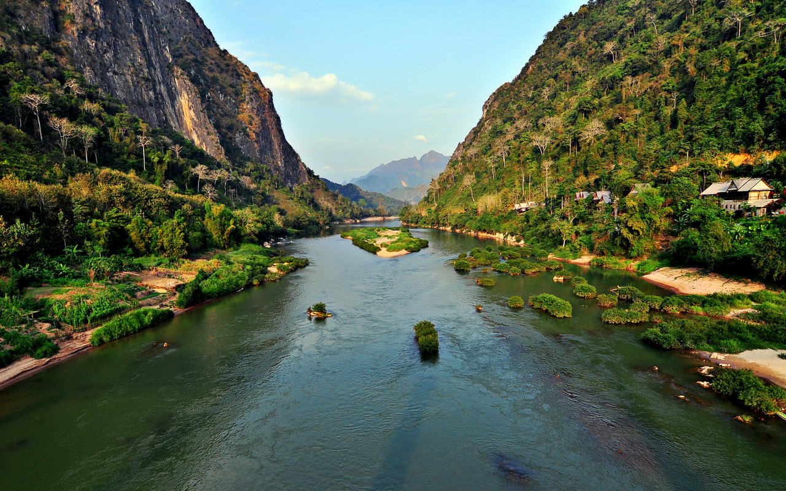
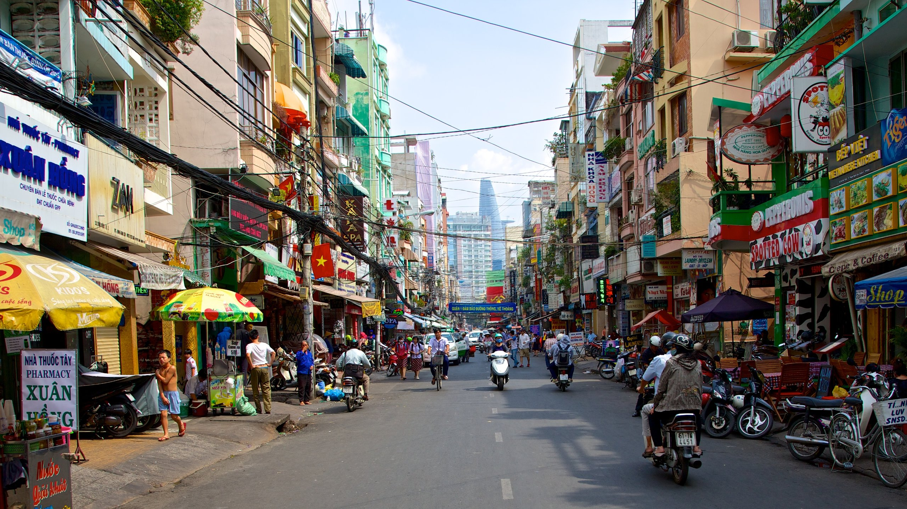

<!DOCTYPE html>
<html lang="ru"></html>
<head>
<meta charset="utf=8">
    <title>Муйне, Вьетнам</title>
    <link rel="stylesheet" href="style.css">
    <link href="https://fonts.googleapis.com/css?family=Quicksand&display=swap" rel="stylesheet">
</head>
<body>
    
<header>"Муйне - туристическая деревня."<br> Рассказ в виде сайта. Алексей Золотарский.</header>
<aside>
    <nav><h2>Навигация</h2>
        <a href="#plus">Плюсы</a><br>
        <a href="#minus">Минусы</a><br>
        <a href="#itog">Итоги</a>
    </nav>
</aside>
    <h1>Вступление</h1>
    <p>Приветствую тебя, дорогой читатель. Меня зовут Алексей, я хочу расскать тебе о том, что же такое Муйне и стоит ли сюда ехать.
        Мы поговорим о достопримечательностях, досуге, публике, ценах, работе, вьетнамцах и подведем итог, кому и зачем стоит или не стоит сюда ехать.
    </p>
   
    <h1 id="plus">Плюсы</h1>
    <h2>Достопримечательности</h2>
        <ul><div class="underline">По близости</div>
           <li>Белые и красные песчаные дюны</li>
           <li>Пляж Хон Ром</li>
           <li>Волнорез</li>
           <li>Чамские башни Пошану</li>
           <li>Рыбацкая деревня</li>
           <li>Ручей фей</li>
        </ul>
        <div id="galery">
        
        
        <ul><div class="underline">Можно съездить на мопеде или на экскурсию</div>
            <li>Гора Таку и статуя лежачего Будды</li>
            <li>Город Нячанг</li>
            <li>Город "Вечной весны" Далат, расположенный в горах</li>
            <li>Баолок: водопады Дамбри и Дасара</li>
            <li>Бухта Виньхи</li>
            <li>Сайгон + Меконг + туннели Кучи(лучше всего перед вылетом)</li>
        </ul>
        <div id="galery">
            
            
            
        </div>
    <h2>Досуг</h2>
    <p>Сёрфинг и кайт-сёрвинг. В основном, сюда едут именно ради этого. Стабильно дует ветер, нет дождей, приходят волны до 2-3 метров (для новичка больше и не надно). Кайт-сёрфинг удовольствие подороже, а вот для обычного сёрфинга вам достаточно
        взять себе 1-2 урока по 20-30$, после чего приобрести доску за 100-150$ и всё, можно бежать ловить волны.</p>
    <p>Бары, клубы, рестораны, Бо Ке. С первыми тремя пунктами всё ясно, на последнем остановимся подробнее. Бо Ке - это кафе, в котором в аквариумах содержат живую рыбу и морепродукты, под заказ их вам готовят. Стоит это приемлемых денег, таких заведений очень много</p>
    <p>Спортивный зал и йога. В регионе достаточно жарко, много дешевых овощей и фруктов, что способствует похудению, так почему бы организму не помочь и не привести себя в форму.</p>
    <div id="galery">
    </div>
    <h2>Публика</h2>
    <p>Если вы собираетесь приехать как турист на 10-14 дней, вам будет не до этого, листайте дальше.
        Если же вы собираетесь провести в Муйне весь сезон (с декабря по февраль), этот пункт становится важным для вас. Пообщаться можно с "локалами", то есть теми, кто здесь также проживает длительное время, они достаточно дружелюбные, позитивные.
        Из туристов лучше общаться с иностранцами (если знание английского позволяет). Они также охотно идут на контакт, ведь, в отличии от вас, им здесь совсем общаться не с кем: кругом вьетнамцы и русские, по-английски почти никто не говорит.
        С нашими соотечественниками, как правило, диалог происходит по схеме: "О! Земляки! А вы откуда?! - ... - А я из Читы, угостите сигареткой".
    </p>
    <h2>Цены</h2>
    <ul>
        <li>Жильё: 50-150$/мес(на фото guest hause за 150$)</li>
        <li>Аренда мопеда: 50-100$/мес</li>
        <li>Питание: 5-15$/день(если готовить самому, можно уложиться в 2-3$)</li>
        <li>Экскурсии: 30-40$ однодневные, 90-110$ двухдневные</li>
        <li>Самостоятельные перелет: около 350$ в одну сторону</li>
        <li>Пакетные туры на 10-14 дней с проживанием и завтраками - 600-1200$ с человека</li>
    </ul>
    <div id="galery">
        
    </div>
    <h1 id="minus">Минусы</h1>
    <h2>Работа</h2>
    <p>Работы здесь не много. Варианты сводятся, как правило, к промоутерам или обслуживающему персоналу в кафе и гостиницах</p>
    <p>Можно подрабатывать в качестве "ИП", оказывая услуги по обучению сёрфингу, аренде мото техники, фитнес-тренер и т.п.</p>
    <p>Заработные платы и график - вот, в чем глаыне проблемы. Зарплаты здесь по 200-300$, а работать за эти деньги придётся по 5-6 дней в неделю, оно вам надо?</p>
    <p>Идеальный вариант избежать зависимости своего бюджета от происходящего вокруг: удалённая работа или личные накопления</p>
    <h2>Вьетнамцы</h2>
    <p>Находясь в их стране, вам придётся с ними мириться. Начнём с грустного, вьетнамцы в туристической зоне.
        Эти люди будут видеть в вас мешок с деньгами: нигде не написаны цены, а если вы их знаете и ходите в магазин каждый день, вас всё равно будут пытаться обмануть.
        95% того, что сделано руками этих людей (в понимании европейцев) будет некрасивым, невкусным, колхозным, некачественным и т.д. Чистота их тоже не особо волнует. Видишь что-то хорошее - скорее всего это сделали не местные.
        Кругом сплошное "нельзя", "не делай", "не трогай", "просто дай нам денег и уходи". А уж работать с ними - это отдельная песня: враньё и палки в колёсах на каждом шагу.
        Вне туристической зоны местные жители ведут себя нормально: улыбаются, интересуются, откуда ты приехал, предлагают что-то попробовать, готовы помочь. Есть лишь два "но": эта зона не зря не является туристической, там ничего интересного, как правило; они практически не говорят по-английски, а жестами много не обсудишь.
    </p>
    <div id="galery">
        , 
        
    </div>
    <h1 id="itog">Итоги</h1>
    <p>Климат я не стал относить ни к плюсам, ни к минусам: дело вкуса. В сезон здесь +30, нет дождей, влажность высокая, но не драмматическая - 50-70%.
        Так вот, если климат вам подходит, можно задуматься о поездке в Муйне.
    </p>
<ul><div class="underline">Стоит ехать</div>
    <li>Желающим научиться кататься на сёрфе, кайте за умеренные деньги</li>
    <li>Удалёнщикам, которым захотелось экзотики</li>
    <li>Туристам, которые хотят посмотреть Азию дёшево</li>
    <li>Интересующимся историей Вьетнама и их воин(есть, что изучить)</li>
</ul>
<ul><div class="underline">Не стоит ехать</div>
    <li>Людям, которые плохо переносят жару</li>
    <li>Тем, для кого важен сервис, качество, обслуживание</li>
    <li>Последователям Ильи Варламова: тут кругом всё в банерах, некрасивых постройках и местами грязно</li>
    <li>Любителям пляжного отдыха: из-за волн купаться не очень комфортно</li>
</ul>
<footer>Решать вам, удачи!</footer>
</body>
</html>